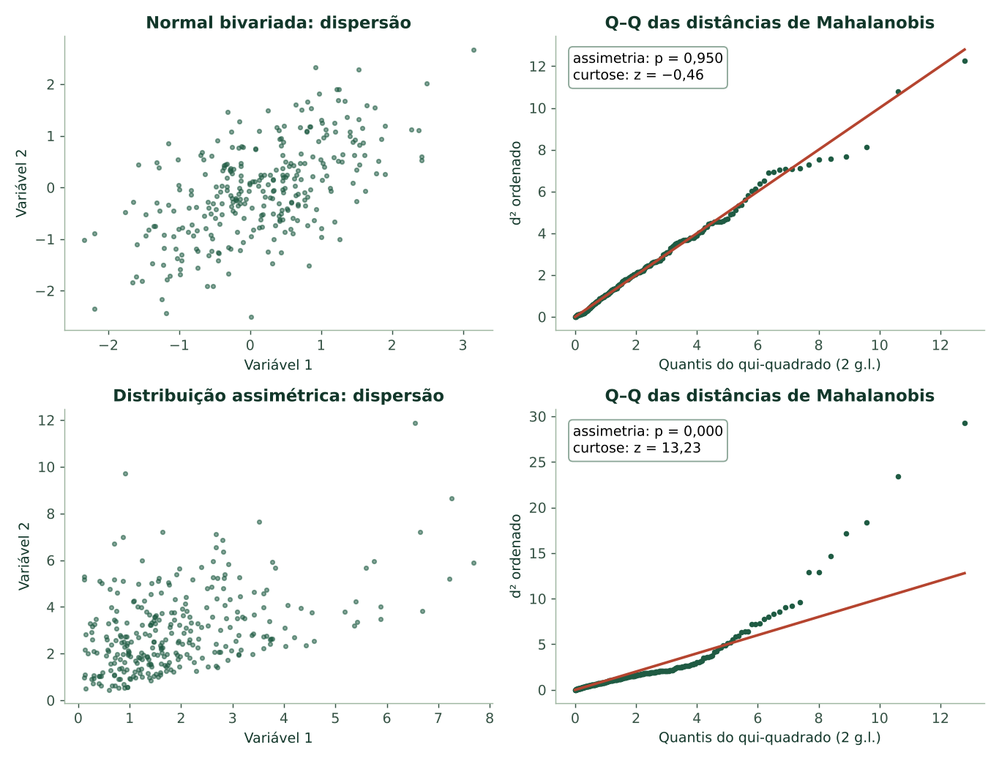
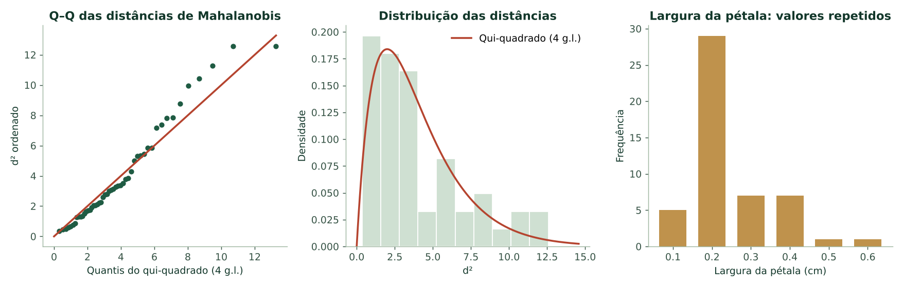

Mardia (normalidade multivariada)
Avalia a normalidade multivariada por meio da assimetria e da curtose conjuntas das variáveis.
Comece por aqui
MANOVA, análise discriminante e o próprio M de Box supõem que o conjunto de variáveis tenha distribuição normal multivariada. Verificar cada variável separadamente não basta: todas podem parecer normais e, ainda assim, o conjunto não ser. O teste de Mardia avalia a nuvem de pontos inteira por duas medidas, a assimetria e a curtose multivariadas.
O teste se apoia na distância de Mahalanobis: a distância de cada observação ao centro da nuvem, medida em unidades de desvio-padrão e levando em conta as correlações entre as variáveis. Sob normalidade multivariada, o quadrado dessas distâncias segue aproximadamente uma distribuição qui-quadrado com \(p\) graus de liberdade.
O que é o teste
Mardia (1970) generalizou para várias dimensões os coeficientes de assimetria e de curtose. A assimetria \(b_{1,p}\) é zero quando a nuvem é perfeitamente simétrica em torno do centro. A curtose \(b_{2,p}\) vale, em uma normal, \(p(p+2)\): valores maiores indicam caudas pesadas (observações distantes demais do centro); menores, caudas leves.

Pressupostos e como verificá-los
| Pressuposto | Por que importa | Como verificar |
|---|---|---|
| Observações independentes | As estatísticas supõem amostra aleatória. | Delineamento do estudo. |
| Variáveis quantitativas contínuas | Valores muito arredondados ou discretos distorcem as medidas. | apply(X, 2, function(v) length(unique(v))). |
| n maior que o número de variáveis | A matriz de covariâncias precisa ser invertível. | nrow(X) > ncol(X) e det(cov(X)) diferente de zero. |
| Amostra moderada ou grande | As distribuições de referência são assintóticas; com n < 20 usa-se uma correção para a assimetria. | nrow(X). |
| Grupos analisados separadamente | Misturar grupos com médias diferentes cria não normalidade artificial. | Aplique o teste dentro de cada grupo ou aos resíduos do modelo. |
Hipóteses e estatística de teste
Em que:
- \(n,\ p\)
- número de observações e de variáveis
- \(\mathbf x_i\)
- vetor com as \(p\) medidas da observação i
- \(\bar{\mathbf x}\)
- vetor de médias
- \(\mathbf S\)
- matriz de covariâncias amostral, com divisor \(n\)
- \(d_{ij}\)
- produto de Mahalanobis entre as observações i e j; \(d_{ii}\) é o quadrado da distância de Mahalanobis da observação i
- \(b_{1,p}\)
- assimetria multivariada (zero sob simetria)
- \(b_{2,p}\)
- curtose multivariada (igual a \(p(p+2)\) na normal)
Exemplo numérico, passo a passo (n = 4, p = 2)
Observações: (1; 2), (2; 4), (4; 3) e (5; 7). O vetor de médias é (3; 4) e a matriz de covariâncias com divisor \(n\) é \(\mathbf S=\begin{pmatrix}2{,}5&2{,}0\\2{,}0&3{,}5\end{pmatrix}\). A matriz dos \(d_{ij}\) fica:
| i \ j | 1 | 2 | 3 | 4 |
|---|---|---|---|---|
| 1 | 1,627 | 0,678 | -0,542 | -1,763 |
| 2 | 0,678 | 0,949 | -1,559 | -0,068 |
| 3 | -0,542 | -1,559 | 2,847 | -0,746 |
| 4 | -1,763 | -0,068 | -0,746 | 2,576 |
Assimetria: soma dos 16 valores ao cubo dividida por \(4^2\): \(b_{1,2}=1,6429\).
Curtose: \(b_{2,2}=(1,627^2+0,949^2+2,847^2+2,576^2)/4=4,5734\); o valor esperado na normal é \(p(p+2)=8\).
Com apenas 4 observações o exemplo serve para acompanhar a conta; as distribuições de referência exigem amostras maiores.
Propriedades e valor-p
- \(b_{1,p}\geq0\); o teste de assimetria é unilateral à direita.
- O teste de curtose é bilateral: \(z\) positivo indica caudas pesadas; negativo, caudas leves.
- As duas medidas não mudam com transformações lineares das variáveis (mudança de unidade, rotação).
- A normalidade multivariada só é plausível quando nenhum dos dois testes rejeita. Como são dois testes, pode-se dividir o nível de significância por dois (Bonferroni).
- Não há intervalos de confiança usuais; a magnitude é descrita por \(b_{1,p}\) e pela diferença \(b_{2,p}-p(p+2)\).
Como interpretar os resultados
| Resultado | Leitura | Conduta |
|---|---|---|
| Assimetria com p < 0,05 | A nuvem não é simétrica. | Investigue variáveis assimétricas; considere transformações (log, Box–Cox). |
| Curtose com p < 0,05 e z > 0 | Caudas pesadas ou outliers multivariados. | Examine as maiores distâncias de Mahalanobis. |
| Curtose com p < 0,05 e z < 0 | Caudas leves, comum em mistura de grupos. | Verifique se há subgrupos na amostra. |
| Ambos com p ≥ 0,05 | Sem evidência contra a normalidade multivariada. | Não é prova; confirme com o gráfico Q–Q. |
Reporte as duas estatísticas, com graus de liberdade e valores-p, e acompanhe com o gráfico Q–Q das distâncias de Mahalanobis.
Como executar no R e em Python
Onde executar o código em Python
Não é preciso instalar nada: o Google Colab é um computador na nuvem, gratuito, que executa Python pelo navegador e já traz as bibliotecas usadas aqui (numpy, scipy e matplotlib).
O teste pode ser calculado com operações matriciais do R base, como no exemplo. O pacote MVN (KORKMAZ; GOKSULUK; ZARARSIZ, 2014) traz a função mvn(), que também oferece os testes de Henze–Zirkler e de Royston. O nome do argumento que seleciona o teste mudou entre versões do pacote; confira com ?mvn.
# install.packages("MVN")
library(MVN)
X <- iris[iris$Species == "setosa", 1:4]
mvn(X, mvn_test = "mardia") # em versões anteriores: mvnTest = "mardia"
Exemplo de aplicação
Contexto dos dados
Usamos as 50 flores da espécie setosa do conjunto iris, com suas quatro medidas. A pergunta é se esse grupo pode ser tratado como normal multivariado, o que interessa para a MANOVA, a análise discriminante e o M de Box.
Código em R
# Mardia (normalidade multivariada): exemplo completo ----
# O cálculo abaixo usa apenas o R base. O pacote MVN oferece o teste pronto (item 5).
# 1. Dados: 50 flores da espécie setosa, 4 medidas (cm)
X <- as.matrix(iris[iris$Species == "setosa", 1:4])
n <- nrow(X); p <- ncol(X)
colMeans(X)
# 2. Assimetria e curtose multivariadas de Mardia
Xc <- scale(X, center = TRUE, scale = FALSE)
S <- crossprod(Xc) / n # covariância com divisor n
D <- Xc %*% solve(S) %*% t(Xc) # produtos de Mahalanobis
b1 <- sum(D^3) / n^2 # assimetria
b2 <- sum(diag(D)^2) / n # curtose
# 3. Estatísticas de teste e valores-p
est_assimetria <- n * b1 / 6
gl <- p * (p + 1) * (p + 2) / 6
p_assimetria <- pchisq(est_assimetria, gl, lower.tail = FALSE)
z_curtose <- (b2 - p * (p + 2)) / sqrt(8 * p * (p + 2) / n)
p_curtose <- 2 * pnorm(abs(z_curtose), lower.tail = FALSE)
c(b1 = b1, estatistica = est_assimetria, gl = gl, valor_p = p_assimetria)
c(b2 = b2, z = z_curtose, valor_p = p_curtose)
# 4. Normalidade de cada variável
apply(X, 2, function(v) shapiro.test(v)$p.value)
# 5. Teste pronto no pacote MVN (install.packages("MVN"))
# library(MVN)
# mvn(X, mvn_test = "mardia") # versões 6 ou mais recentes
# mvn(X, mvnTest = "mardia") # versões anteriores
# 6. Gráfico Q-Q das distâncias de Mahalanobis contra o qui-quadrado
d2 <- sort(diag(D))
q <- qchisq(ppoints(n), df = p)
plot(q, d2, pch = 19, xlab = "Quantis do qui-quadrado", ylab = "Distância de Mahalanobis ao quadrado")
abline(0, 1, col = "red", lwd = 2)
A mesma análise em Python, com os resultados
Cole o código em um notebook do Google Colab ↗ e execute com Shift+Enter. Os valores abaixo são a saída desse código.
# Bibliotecas: numpy, scipy e matplotlib (já instaladas no Google Colab)
import numpy as np
from scipy import stats
import matplotlib.pyplot as plt
from sklearn.datasets import load_iris
def mardia(X):
"""Teste de Mardia: assimetria e curtose multivariadas."""
n, p = X.shape
Xc = X - X.mean(axis=0)
S = Xc.T @ Xc / n # covariância com divisor n
D = Xc @ np.linalg.inv(S) @ Xc.T # produtos de Mahalanobis
b1 = np.sum(D**3) / n**2 # assimetria multivariada
b2 = np.sum(np.diag(D)**2) / n # curtose multivariada
est_a = n * b1 / 6; gl = p * (p + 1) * (p + 2) // 6
p_a = stats.chi2.sf(est_a, gl)
z_c = (b2 - p * (p + 2)) / np.sqrt(8 * p * (p + 2) / n)
p_c = 2 * stats.norm.sf(abs(z_c))
return b1, b2, est_a, gl, p_a, z_c, p_c, np.diag(D)
# 1. Dados: 50 flores da espécie setosa, 4 medidas (cm)
iris = load_iris()
X = iris.data[iris.target == 0]
n, p = X.shape
print("n =", n, "| p =", p, "| médias:", np.round(X.mean(axis=0), 3))
# 2. Teste de Mardia
b1, b2, est_a, gl, p_a, z_c, p_c, d2 = mardia(X)
print(f"\nAssimetria: b1 = {b1:.4f} | estatística = {est_a:.4f}, gl = {gl}, p-valor = {p_a:.4f}")
print(f"Curtose: b2 = {b2:.4f} (esperado {p*(p+2)}) | z = {z_c:.4f}, p-valor = {p_c:.4f}")
# 3. Normalidade de cada variável (Shapiro-Wilk)
for nome, col in zip(["Comp. sépala", "Larg. sépala", "Comp. pétala", "Larg. pétala"], X.T):
W, pw = stats.shapiro(col)
print(f"{nome:<13} W = {W:.4f}, p-valor = {pw:.4f}")
# 4. As 150 flores juntas (mistura de três espécies)
r = mardia(iris.data)
print(f"\nTodas as espécies: assimetria = {r[2]:.2f} (p = {r[4]:.2e}) | curtose z = {r[5]:.3f} (p = {r[6]:.4f})")
# 5. Exemplo do texto: n = 4, p = 2
Y = np.array([[1, 2], [2, 4], [4, 3], [5, 7]], dtype=float)
ry = mardia(Y)
print(f"\nExemplo pequeno: b1 = {ry[0]:.4f}, b2 = {ry[1]:.4f}, d² = {np.round(ry[7], 3)}")
# 6. Gráfico Q-Q das distâncias de Mahalanobis contra o qui-quadrado
d2_ord = np.sort(d2)
q = stats.chi2.ppf((np.arange(1, n + 1) - 0.5) / n, p)
plt.scatter(q, d2_ord); plt.plot([0, q.max()], [0, q.max()], color="red")
plt.xlabel("Quantis do qui-quadrado (4 gl)"); plt.ylabel("Distância de Mahalanobis ao quadrado"); plt.show()
Resultados da execução
n = 50 | p = 4 | médias: [5.006 3.428 1.462 0.246] Assimetria: b1 = 3.0797 | estatística = 25.6643, gl = 20, p-valor = 0.1772 Curtose: b2 = 26.5377 (esperado 24) | z = 1.2950, p-valor = 0.1953 Comp. sépala W = 0.9777, p-valor = 0.4595 Larg. sépala W = 0.9717, p-valor = 0.2715 Comp. pétala W = 0.9550, p-valor = 0.0548 Larg. pétala W = 0.7998, p-valor = 0.0000 Todas as espécies: assimetria = 67.43 (p = 4.76e-07) | curtose z = -0.230 (p = 0.8180) Exemplo pequeno: b1 = 1.6429, b2 = 4.5734, d² = [1.627 0.949 2.847 2.576]

| Teste | Estatística | Valor-p | Decisão (5%) |
|---|---|---|---|
| Assimetria de Mardia | b₁ = 3,080; qui-quadrado = 25,66 (20 g.l.) | 0,177 | Não rejeita |
| Curtose de Mardia | b₂ = 26,54 (esperado 24); z = 1,295 | 0,195 | Não rejeita |
| Shapiro–Wilk, largura da pétala | W = 0,800 | < 0,0001 | Rejeita |
| Mardia, três espécies juntas | qui-quadrado = 67,43; z = −0,23 | 4,8 × 10⁻⁷ e 0,818 | Rejeita (assimetria) |
Leitura: para a setosa, nenhum dos dois testes de Mardia rejeita a normalidade multivariada. Note, porém, que a largura da pétala falha no Shapiro–Wilk, por ser muito discreta. Os dois resultados não se contradizem: testes globais como o de Mardia podem não ter poder para um desvio concentrado em uma única variável. A regra prática é usar os dois níveis de diagnóstico. Na última linha, as 150 flores juntas são rejeitadas com clareza: misturar grupos com médias diferentes gera uma nuvem que não é normal, mesmo que cada grupo seja.
Erros comuns
| Erro | Como evitar |
|---|---|
| Concluir normalidade multivariada porque cada variável passou em um teste univariado | A normalidade marginal é necessária, mas não suficiente. |
| Aplicar o teste a todos os grupos misturados | Teste dentro de cada grupo ou nos resíduos do modelo. |
| Olhar apenas um dos dois testes | Assimetria e curtose captam desvios diferentes. |
| Ignorar outliers multivariados | Examine as maiores distâncias de Mahalanobis. |
| Tratar p alto como prova | Com n pequeno o poder é baixo; use o gráfico Q–Q. |
Alternativas e fluxo de trabalho
| Procedimento | Quando preferir |
|---|---|
| Henze–Zirkler | Teste único, consistente contra qualquer alternativa; boa opção geral. |
| Royston | Extensão do Shapiro–Wilk; adequado para n pequeno e moderado. |
| Doornik–Hansen | Baseado em assimetria e curtose transformadas; comum em econometria. |
| Q–Q das distâncias de Mahalanobis | Sempre, como complemento gráfico. |
| Shapiro–Wilk por variável | Para localizar em qual variável está o desvio. |
- Examine cada variável (histograma, Q–Q).
- Faça o Q–Q das distâncias de Mahalanobis.
- Aplique o teste de Mardia por grupo.
- Se rejeitar, identifique a causa (assimetria, outliers, mistura de grupos) e escolha transformação ou método robusto.
Referências desta ficha
- MARDIA, Kanti V. Measures of multivariate skewness and kurtosis with applications. Biometrika, v. 57, n. 3, p. 519-530, 1970.
- MARDIA, Kanti V. Applications of some measures of multivariate skewness and kurtosis in testing normality and robustness studies. Sankhyā: Series B, v. 36, n. 2, p. 115-128, 1974.
- KORKMAZ, Selcuk; GOKSULUK, Dincer; ZARARSIZ, Gokmen. MVN: an R package for assessing multivariate normality. The R Journal, v. 6, n. 2, p. 151-162, 2014.
- HENZE, Norbert; ZIRKLER, Bernhard. A class of invariant consistent tests for multivariate normality. Communications in Statistics: Theory and Methods, v. 19, n. 10, p. 3595-3617, 1990.
- JOHNSON, Richard A.; WICHERN, Dean W. Applied multivariate statistical analysis. 6. ed. Upper Saddle River: Pearson Prentice Hall, 2007.
- FISHER, Ronald A. The use of multiple measurements in taxonomic problems. Annals of Eugenics, v. 7, n. 2, p. 179-188, 1936. (Conjunto de dados
iris, pacotedatasetsdo R.) - ANDERSON, Edgar. The irises of the Gaspé Peninsula. Bulletin of the American Iris Society, v. 59, p. 2-5, 1935.
- PEDREGOSA, Fabian et al. Scikit-learn: machine learning in Python. Journal of Machine Learning Research, v. 12, p. 2825-2830, 2011. (Função
sklearn.datasets.load_iris.) - R CORE TEAM. R: a language and environment for statistical computing. Vienna: R Foundation for Statistical Computing, 2026. Disponível em: https://www.r-project.org/.
- POSIT TEAM. RStudio: integrated development environment for R. Boston: Posit Software, PBC. Disponível em: https://posit.co/download/rstudio-desktop/.
- VIRTANEN, Pauli et al. SciPy 1.0: fundamental algorithms for scientific computing in Python. Nature Methods, v. 17, p. 261-272, 2020. DOI: 10.1038/s41592-019-0686-2. (Funções do módulo
scipy.stats.) - HARRIS, Charles R. et al. Array programming with NumPy. Nature, v. 585, p. 357-362, 2020. DOI: 10.1038/s41586-020-2649-2.
- HUNTER, John D. Matplotlib: a 2D graphics environment. Computing in Science & Engineering, v. 9, n. 3, p. 90-95, 2007.
- GOOGLE. Google Colaboratory. Disponível em: https://colab.research.google.com/.
- As figuras desta ficha foram elaboradas pelo autor.

Prof. Dr. Cássius Henrique Xavier Oliveira
Professor · ICTIN/UFLA · Estatística, Confiabilidade e Ciência de Dados.
Conheça minha trajetória e projetos →